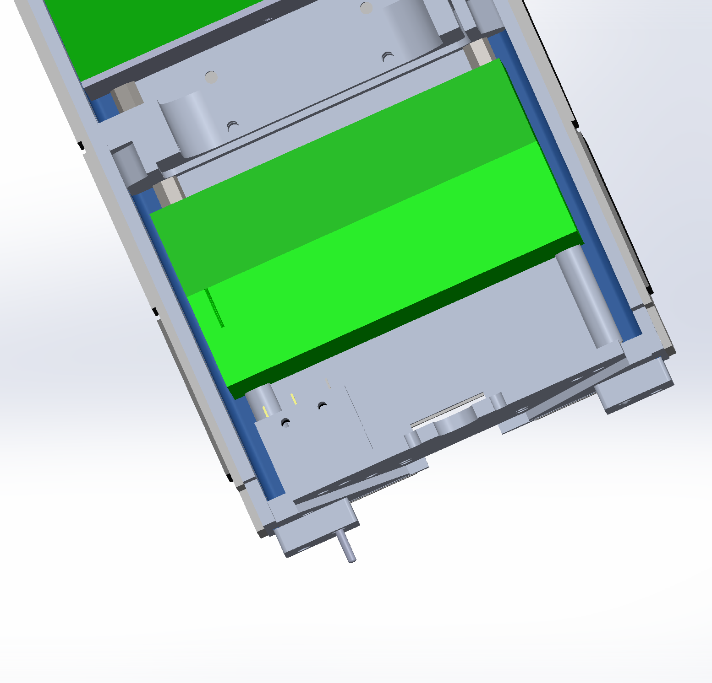

URB Orbit CubeSat
As a structure team member on UBC Orbit, I worked with my subteam and closely
with my team lead to model parts for our new satellite design. This was done in SolidWorks.
I also worked on fixing some of our assemblies that had been broken with the new design, and created engineering drawings
for some of our components.
One notable component I worked on with my lead was designing the antenna submodule. It was required to house two coiled antenna to be released once in orbit and stick out of the satellite. After brainstorming a model for a burnable fuse, it was modelled in CAD.